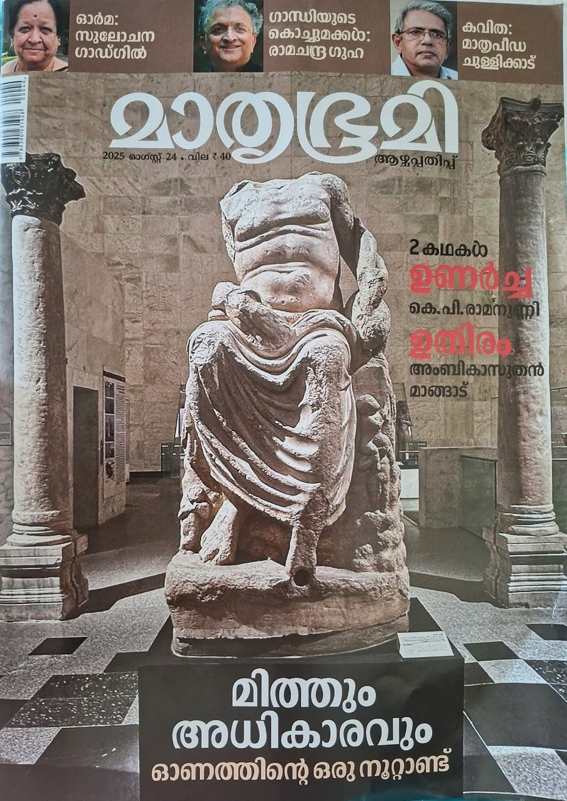
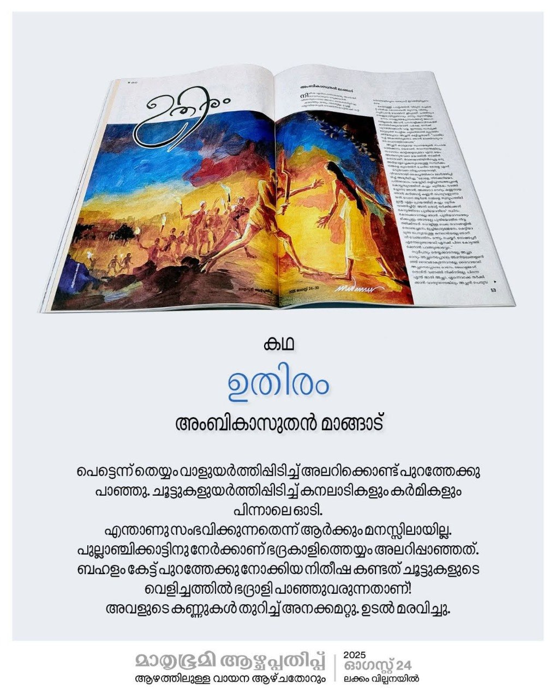

മാതൃഭൂമി ആഴ്ച്ചപ്പതിപ്പിൽ വന്ന 'ഉതിരം' ചെറുകഥ ഇവിടെ വായിക്കാംAuthor: അംബികാസുതൻ മാങ്ങാട്
Review by: പ്രിയ രാധാകൃഷ്ണൻ
വടക്കേ മലബാറിലെ തെയ്യങ്ങളെ കുറിച്ചുള്ള കഥകളും ഉപകഥകളും ഇവിടങ്ങളിലുള്ള തെയ്യക്കോലങ്ങളുടെയത്രയും തന്നെ ഉണ്ട് എന്ന് പറയാം.
താൻ തന്നെ മുപ്പത് രചനകൾ തെയ്യങ്ങളെ ആധാരമാക്കി എഴുതിയിട്ടുണ്ട് എന്ന് അംബികാസുതൻ മാഷ് തന്നെ തോട്ടുങ്കര പോതി എന്ന കഥാസമാഹാരത്തിന്റെ ആമുഖത്തിൽ പറഞ്ഞിട്ടുണ്ട്. അദ്ദേഹത്തിന്റെ മാക്കം എന്ന പെൺ തെയ്യം, മരക്കാപ്പിലെ തെയ്യങ്ങൾ തുടങ്ങിയവയൊക്കെ വായിക്കുകയും സൂക്ഷിച്ചു വയ്ക്കുകയും ചെയ്തിട്ടുണ്ട്.
അണിയലങ്ങളും അരയൊടയും അണിഞ്ഞ് സങ്കീർണവും മനോഹരവും വൈവിദ്ധ്യവുമായ മുഖത്തെഴുത്തും, മന്ത്രപരവും തന്ത്രപരവും കർമ്മപരവുമായ സൂക്ഷ്മതകൾ ആവശ്യമായ ചടങ്ങുകളും അടങ്ങിയ ദൈവക്കോലങ്ങൾ സാമുദായികമായും ജാതീയമായും വിശ്വാസപരമായും വ്യത്യസ്തപ്പെട്ടുകിടക്കുന്നു. എന്നാൽ ഓരോ കനലാടിയും ജാതീയമായ വേർതിരിവുകൾക്കപ്പുറം, തൊട്ടുകൂടായ്മക്കപ്പുറം, വിശ്വാസികൾക്ക് മുന്നിൽ ഏകാർത്ഥത്തിൽ ദൈവം തന്നെയാണ്. അതിസൂക്ഷ്മമായി വിശ്വാസികളുടെ മനസ്സിലേക്ക് ആഴ്ന്നിറങ്ങുമ്പോൾ ഓരോ കനലാടിയും ദൈവമായി മാറുന്ന കാഴ്ചകളാണ് ഓരോ ദേവസ്ഥാനത്തും കണ്ടുവരുന്നത് .
മുൻപ് എഴുതപ്പെട്ടിട്ടുള്ള കഥകൾക്കും നോവലുകൾക്കും പഠനഗ്രന്ഥങ്ങൾക്കും പുറമേ ഈയടുത്തായി വായിച്ച അംബികാ സുതൻ മാഷിന്റെ തന്നെ അല്ലോഹലൻ, പി വി ഷാജികുമാറിന്റെ മരണവംശം, ജിൻഷാ ഗംഗയുടെ ഒട, എം വി ജനാർദ്ദനന്റെ പെരുമലയൻ, കാരക്കുളിയൻ തുടങ്ങിയവയെല്ലാം തെയ്യക്കഥകളായിരുന്നു.
മാതൃഭൂമി കഴിഞ്ഞ ആഗസ്റ്റിൽ പുറത്തിറക്കിയ ആഴ്ചപ്പതിപ്പിലെ അംബികാസുതൻ മാങ്ങാടിന്റെ ഉതിരം എന്ന കഥയാണ് ഇന്നിവിടെ പരിചയപ്പെടുത്തുന്നത്.
തെയ്യം ഇതിവൃത്തമായ കഥകളിലെല്ലാം ഓരോ കനലാടിയുടെയും ദൈവീകമായ വേഷപ്പകർച്ചകൾക്കപ്പുറം വെന്തുരുകിയും ദ്രവിച്ചും അഴുകിയും അഗ്നിയിൽ ഹോമിക്കപ്പെടുന്ന, ദേവപാദങ്ങളിൽ സമർപ്പിക്കപ്പെടുന്ന അവരുടെ ആത്മസംഘർഷത്തിന്റെയും എത്രതന്നെ കൂട്ടിപ്പിടിച്ചാലും കൂടാത്ത കുടുംബ ബന്ധങ്ങളുടെയും കഥകളാണ് കനലുകളായി ഓരോ വായനക്കാരന്റെയും മനസ്സിലേക്ക് വാരിവിതറുന്നത്. മലയാളി പ്രേക്ഷകർ നെഞ്ചേറ്റിയ കളിയാട്ടം എന്ന സിനിമയിലൂടെയാണ് സത്യത്തിൽ തെക്കൻ ജില്ലക്കാരായിരുന്ന നമ്മളെയൊക്കെ തെയ്യം എന്ന കലാരൂപത്തെ ആദ്യം പരിചയപ്പെടുത്തിയത്. തെയ്യക്കോല ജീവിതങ്ങളുടെയെല്ലാം അന്തർധാരകൾ സമരസപ്പെട്ട് കിടക്കുന്നുണ്ടെങ്കിലും എഴുത്തുകാരുടെ ആഖ്യാന രീതികൾ പലപ്പോഴും വേറിട്ട് നിൽക്കുന്നവയാണ് . അവ വായനക്കാരനെ അനുഭവിപ്പിക്കുന്ന രീതികൾ, അതിന്റെ വ്യത്യസ്ത തലങ്ങൾ തീർത്തും പ്രവചനാതീതമാണെന്നാണ് ഓരോ രചനകളും തെളിയിക്കുന്നത്.
അത്തരം ഒരു മികച്ച വായനാനുഭവം നൽകുന്ന കഥയാണ് 'ഉതിരം'. ഉതിരം എന്നാൽ രുധിരം അഥവാ രക്തം എന്നു തന്നെയാണ് അർഥം.
ഓരോ കഥാ മുഹൂർത്തവും വായിച്ചെടുക്കുമ്പോൾ തങ്ങളുടേതല്ലാത്ത കുറ്റം കൊണ്ട് അന്തരീക്ഷത്തിലും വെള്ളത്തിലും കലർന്ന എൻഡോസൾഫാന് ഇരയായവരുടെ ജീവിതം പോലെ മനസ്സിൽ നിന്നും ഒരിക്കലും ഇറങ്ങിപ്പോകാത്ത അനുഭവിപ്പിക്കലാണ് നമുക്കുണ്ടാകുന്നത്. മാതൃഭൂമിയിലാവുമ്പോൾ വാക്കുകൾ മാത്രമല്ല വരകളും നമ്മെ സ്വാധീനിക്കും. മദനന്റെ വരയിൽ തന്നെ കഥ മുഴുവനുണ്ട് എന്ന് തോന്നും. അത്രയ്ക്ക് മിഴിവോടെ കഥയുമായി ചേർന്നുനിൽക്കുന്ന വര അപൂർവമാണ്.
ഈ കഥയിൽ പലയിടങ്ങളിലായി പലപ്പോഴായി വലിയൊരു ചോദ്യചിഹ്നമായും ശൂന്യതയായും സാമൂഹ്യ വിമർശനങ്ങളായും അവശേഷിക്കുന്ന ചൂണ്ടിക്കാട്ടലുകൾ ഏറെയാണ്.
ഓരോ സമുദായത്തിനും ജാതി ചിന്ത വരുന്നതോടൊപ്പം കീഴാള ചിന്തയും വരുന്നു എന്നത് ഒരു സാമൂഹ്യ യാഥാർത്ഥ്യമാണ്.
കരിങ്ങാട്ട് കണ്ണ പെരുവണ്ണാന്റെ മകളാണ് നിതീഷ, മകളുടെ ആറാം വയസ്സിൽ തങ്ങളെ ഉപേക്ഷിച്ചു ഓടിപ്പോയതാണ് അമ്മ സുശീല. നിതീഷ പ്രണയിക്കുന്നത്, ഒരേ തൊഴിൽ ചെയ്യുന്ന എന്നാൽ തങ്ങൾക്ക് അടിയാളരായ, കീഴ്ജാതിക്കാരനായ സുദീപിനെയാണ്. ഇവിടെ അച്ഛന്റെ ശാസനകൾക്ക് മുന്നിൽ നിതീഷ ചോദിക്കണമെന്ന് വിചാരിച്ച ചോദ്യം ഇങ്ങനെയായിരുന്നു - "സുദീപും തെയ്യക്കാരനാണ്. ദൈവമാകുന്ന സുദീപിനെയും മേലാളന്മാർ തൊഴുത് വണങ്ങി നിൽക്കുന്നില്ലേ, പിന്നെന്ത് ജാതിയാണ് അച്ഛാ ?"
അതിസുന്ദരമായ ആഖ്യാന ശൈലിയുള്ള ഈ കഥയിൽ വളരെ ചെറുപ്പം മുതലേ കളിക്കൂട്ടുകാരായിരുന്ന പിന്നീട് പ്രണയബദ്ധരായി തീർന്ന നിതീഷയും സുദീപും തമ്മിലുള്ള ഹൃദയബന്ധത്തോടൊപ്പം പ്രഹേളികയായിരുന്ന സുശീലയുടെ ഓടിപ്പോക്കിനും വായനക്കാരന് കഥയുടെ പിരിമുറുക്കം കൂടുമ്പോൾ ഉത്തരം കിട്ടുന്നുണ്ട്. മറ്റേതൊരു കഥയിലും എന്നപോലെ ഇവിടെയും കാമുകി കാമുകന്മാർ തമ്മിൽ ആത്മസംഘർഷം അനുഭവിക്കുന്നുണ്ട്. അമ്മയുടെ ഒഴിഞ്ഞു പോകലിന് ശേഷം തന്റെ എല്ലാമായിരുന്ന അച്ഛനെ ധിക്കരിക്കുവാനുള്ള മനോധൈര്യവും നിതീഷയ്ക്ക് ലഭിക്കുന്നില്ല.
മകളുടെ ഈ ആത്മസംഘർഷം അച്ഛൻ എന്ന നിലയിൽ കണ്ണൻ പെരുവണ്ണാൻ മനസ്സിലാക്കുന്നുണ്ടാവുമോ...
അതോ കീഴ്ജാതി ചിന്തയുമായി സമരസപ്പെടാതെ പോകുന്ന ഒരു പെരുവണ്ണാനെയാണോ കഥയിൽ കാണാൻ കഴിയുന്നത്.?
വരുന്നതു വരട്ടെ എന്ന് ചിന്തിച്ച് സുശീലയെ പോലെ ഒരു പുറപ്പെട്ടുപോക്കാണോ നിതീഷയ്ക്ക് ഈ പ്രശ്നങ്ങളിൽ നിന്നും രക്ഷ നേടുവാനുള്ള മാർഗ്ഗം? അങ്ങനെ പുറപ്പെട്ടു പോകുമ്പോൾ പിടിക്കപ്പെട്ടാലുള്ള അവസ്ഥഎന്തായിരിക്കും...?
തങ്ങളുടെ ഒളിഞ്ഞുള്ള കൂടിക്കാഴ്ചകൾപലപ്പോഴും അച്ഛന്റെ കണ്ണിൽ പെട്ടാലും ഒന്നും മിണ്ടാതെ, ഒരുപക്ഷേ കണ്ടില്ലെന്നു നടിച്ച് തിരിച്ചു പോവുകയും വീട്ടിലെത്തി ഉപദേശിക്കുകയും ചെയ്യുമ്പോൾ കണ്ണപ്പെരുവണ്ണാന്റെ ആത്മസംഘർഷം എങ്ങനെയായിരിക്കും, എന്നിങ്ങനെ കുറെ ചോദ്യങ്ങൾ വായനക്കാരുടെ മനസ്സിൽ ആധിയായും ഭയമായും കൗതുകമായും മാറുകയാണ് ഉതിരം എന്ന ഈ കഥയിലുടനീളം എന്ന് പറയാം. അതോടൊപ്പമാണ് നേരത്തെ സൂചിപ്പിച്ച രാഷ്ട്രീയ സാമൂഹിക പരാമർശങ്ങളും ഇവിടെ വായിച്ചെടുക്കാൻ സാധിക്കുന്നത്.
ഈ കഥയെ മനോഹരമാക്കുന്ന ചില എഴുത്ത് രീതികളുണ്ട്.
നിതീഷയുടെ മൊബൈലിൽ ലഭിക്കുന്നചാറ്റ് സന്ദേശങ്ങൾ 'മഴത്തുള്ളി പാത്രത്തിൽ വീഴുന്ന ശബ്ദം' ആയാണ് സെറ്റ് ചെയ്തിരുന്നത്. വളരെ ആഴത്തിലുള്ള ചിന്തകൾക്ക് വഴി നൽകുന്നൊരു പ്രയോഗമാണത്.
നേരത്തെ തന്നെ പല എഴുത്തുകളിലും കഥകളിലും സൂചിപ്പിച്ചിരുന്ന, കനലാടി ദൈവമാകുമ്പോൾ പിന്നൊന്നും അറിയുന്നില്ല, അവർ പൂർണമായും ദൈവമായി മാറുന്നു. ഉടുത്തുകെട്ട് അഴിക്കുമ്പോഴാണ് ഉള്ളുപൊള്ളുന്നത് എന്ന പറച്ചിൽ അതിന്റെ പൂർണാർത്ഥത്തോടെ ഈ കഥയിൽ കാണാം.
പല ചെയ്തികൾക്കുമുള്ള പ്രശ്നപരിഹാരമായും ഈ വേഷപ്പകർച്ചയെ ഉപയോഗിക്കാം എന്ന സൂചന കഥയിൽ നൽകുന്നുണ്ട് . ഇനി അഥവാ അത്തരം ഒരു പ്രശ്നപരിഹാരത്തിന് ഈ വിശ്വാസത്തെ എങ്ങനെ ഉപയോഗിക്കുന്നു എന്നും അതിസമർത്ഥമായാണ് കഥാകൃത്ത് ഇവിടെ അവതരിപ്പിച്ചിട്ടുള്ളത്. ഒന്നുകൂടി തെളിച്ചു പറയുകയാണെങ്കിൽ പക മൂത്ത മനുഷ്യൻ ചെയ്യുന്ന പാതകം ദൈവത്തിന്റെ മേൽ ചാരി മനുഷ്യൻ അവന്റെ വൈകൃതത്തെ മറയ്ക്കുന്നു. മനുഷ്യനെ അവന്റെ സ്വന്തം മനസ്സിന്റെ ഒരു മൂലയിൽ മാത്രം ഒതുക്കിയിട്ട് ഉള്ളിൽ വേരുറച്ചു പോയ വിശ്വാസങ്ങളുടെ പെരുതാളിക്കാവിൽ ഉതിരം ചിന്തുന്നത് അടക്കിയാലും അടങ്ങാത്ത കാട്ടുമുടന്തയോ കരിംകുട്ടിയോ ഭദ്രകാളിയോ ആവുന്നു. അതിന്റെ ഇര കൃത്യമായി അടക്കിയാലും അടങ്ങാത്ത പ്രണയമോ ജാതികോയ്മയോ ഒക്കെയാവുന്നു.
കാലമെത്ര കഴിഞ്ഞാലും നവോത്ഥാനമെത്ര വന്നാലും ജാതിവ്യവസ്ഥയുടെ അസമത്വം രക്തം ചിന്തി തന്നെ തുടരുന്നു. ദൈവത്തിനും മനുഷ്യനുമിടയിലെരിയുന്ന തെയ്യക്കാരന്റെ ആത്മസംഘർഷത്തിന്റെ മേലേരിച്ചൂടിൽ വായനക്കാരൻ പൊള്ളിപ്പോകും.
സ്കൂൾ പഠനകാലത്തൊരുനാൾ മഴ പെയ്യുമ്പോൾ, പതിവായി ചൂടുന്ന താളിലക്കുട മറന്നതിനാൽ നനഞ്ഞ സുദീപിനെ തന്റെ കുടയിൽ കൂട്ടുന്ന നിതീഷയോട് സുദീപ് പറയുന്നത് - "ഞാൻ കുടയിൽ കൂടിയിട്ടും കാര്യമൊന്നുമില്ല, എന്റെ കുടിലിന്റെ ഉള്ളിലും മഴ പെയ്യുന്നുണ്ടാകും" എന്നാണ്. കഥാ സന്ദർഭത്തിന്റെ ഒരു കാലഘട്ടമാണ് ഈയൊരു സംസാരത്തിലൂടെ നമുക്ക് മനസ്സിലാകുന്നത്. അതേസമയം മകൾ സുദീപിനെ കുടയിൽ കൂട്ടിയെന്ന് അറിഞ്ഞ പെരുവണ്ണാൻ, സുദീപിന് ഒരു പുത്തൻ കുട വാങ്ങിച്ചു കൊടുക്കുന്നുണ്ട്. അതെന്തിനായിരുന്നു എന്ന ചിന്ത വായനക്കാരനെ നിതീഷക്കൊപ്പം പല തലത്തിലും ചിന്തിപ്പിക്കുന്നതായി. കീഴാളരിലും വലുപ്പച്ചെറുപ്പമുണ്ടെന്നും അവർക്കും ദുരഭിമാനമുണ്ടെന്നും ഉള്ളതു തന്നെയാണ് ഈ കഥയുടെ പ്രധാന തന്തു.
"കോമരത്തെ പോലെ മൊബൈൽ വിറച്ചു തുള്ളാൻ തുടങ്ങി" എന്ന വാക്കുകൾ മകളുടെയും കാമുകന്റെയും മാത്രമല്ല കനലാടിയായ കണ്ണൻ പെരുവണ്ണാന്റെയും മനസ്സുകളെയാണ് വിറപ്പിച്ചത്.
'താൻ കെട്ടുന്ന തെയ്യക്കോലങ്ങൾ കണ്ട് കണ്ട്, തന്നെ മനുഷ്യനായി കാണാതെ ഭാര്യ ദൈവമായി കണ്ടു' എന്ന സംസാരം ഇനി താൻ ചെയ്യാൻ പോകുന്ന കർമ്മങ്ങൾക്കുള്ള സൂചനയായി കാണുന്നതിനൊപ്പം, ഒരുപക്ഷേ, അതിനേക്കാൾ കൂടുതൽ കഥാന്ത്യത്തെ എങ്ങിനെ മനോഹരമായി കൂട്ടിയോജിപ്പിക്കാം എന്നതിന്റെ വ്യക്തമായ സൂചനയായി നമുക്ക് തോന്നും.
എഴുത്തിൽ സ്വീകരിച്ചിട്ടുള്ള സ്ഥലപ്പേരുകൾ പലപ്പോഴും കഥയുടെ രസതന്ത്രത്തിന് അനുയോജ്യമായ രീതിയിലുള്ളവയായിരുന്നു. പരതാളിക്കാവും പൂച്ചപ്പാതാളവും കാഞ്ഞിരക്കാടും പുല്ലാനിപൊന്തയും ഒക്കെ ഉദാഹരണങ്ങൾ മാത്രം.
ഈ കഥയിലെ ഏറ്റവും അപകടകരമായതും ഞെട്ടലുളവാക്കുന്നതുമായ ഒരു ചിന്ത വായനക്കാരനിലേക്ക് സന്നിവേശിപ്പിച്ച ഒരു സന്ദർഭമുണ്ട്.
"പരതാളിക്കാടും കാഞ്ഞിരക്കാടും താണ്ടി നിരത്തിലെത്തിയപ്പോൾ പെരുവണ്ണാൻ മകളോട് മയത്തിൽ സംസാരിച്ചു തുടങ്ങി" എന്ന വാക്കുകളിലെ 'മയം' അയാളുടെ ചിന്തകളിൽ കലർന്ന വിഷമയം തന്നെയല്ലേ.
അതുപോലെ തന്നെ മൂന്നുനാലു മണിക്കൂറത്തേക്ക് പുതിയ ഭഗവതിയായി ഉറയുകയും ഭക്തർക്ക് വാരിക്കോരി അനുഗ്രഹം ചൊരിയുകയും ചെയ്യുന്ന കണ്ണ പെരുവണ്ണാൻ അരമണിക്കൂർ വിശ്രമത്തിനുശേഷം രക്തദാഹിയായ ഭദ്രകാളി ആകുന്ന കാഴ്ച മറ്റു കോലങ്ങൾക്കൊപ്പം തെയ്യങ്ങളുടെ നേർക്കാഴ്ചകളായാണ്, പകർന്നാട്ടമായാണ് വായനക്കാരന് അനുഭവപ്പെടുന്നത്.രാത്രിയുടെ അവസാനയാമത്തിൽ കാണികളെല്ലാം പിരിഞ്ഞ് ഏതാനും കാനലാടികളുടെ മാത്രം സാന്നിധ്യത്തിലാണ് ചുടുരക്തവും പച്ചമാംസവുമെല്ലാം നേദ്യമായി സ്വീകരിക്കുന്ന ഉഗ്രമൂർത്തിയായ ഭദ്രകാളിതെയ്യം ഇറങ്ങുന്നത്. കാണികളുടെ രക്തമുറയുന്ന രൗദ്രത... ചാടുലമായ ചുവടുകളുടെ മൂർദ്ധന്യത്തിൽ "എനക്ക് കല്പിച്ച ഉതിരമെവിടെ" എന്ന് ഭദ്രകാളി അലറുമ്പോൾ വായ്പൊത്തി വിറച്ചു കൊണ്ടൊരാൾ കാലുകൾ ബന്ധിക്കപ്പെട്ടു കൂട്ടിയിട്ടിരിക്കുന്ന കോഴികളുടെ നേർക്ക് വിരൽ ചൂണ്ടുമ്പോൾ തല വെട്ടിച്ചു കൊണ്ട് തെയ്യം ഏതോ ലക്ഷ്യത്തിലേയ്ക്ക് കുതിക്കുകയാണ്... തെളിച്ചം കുറഞ്ഞ ചൂട്ടുകറ്റകൾ മിന്നിച്ചു കനലാടികൾ പിന്നാലെയെത്താൻ പാടുപെടുന്നു. സ്ത്രീസാന്നിധ്യം പരിസരത്തു ണ്ടാവാൻ പാടില്ല എന്ന ചിട്ട പോലും ചില അവസരങ്ങളിൽ മുതലെടുക്കപ്പെടുന്നു എന്നും കൂടി ഈ കഥ വായിക്കുമ്പോൾ ഒട്ടൊരു ഭീതിയോടെ നാമറിയുകയാണ്.
ഇത്രയും മനോഹരമായ ഒരു കഥ മലയാളികൾക്ക് സമ്മാനിച്ച അംബികാസുതൻ മാഷിന് ഇനിയും ഒട്ടേറെ വൈവിദ്ധ്യങ്ങളായ, ഏറെ ചിന്തിപ്പിക്കുന്നതും സാമൂഹ്യ വിമർശനങ്ങൾ ഉൾക്കൊള്ളുന്നതുമായ കഥകൾ എഴുതാൻ സാധിക്കട്ടെ എന്ന് ആശംസിക്കുന്നു.